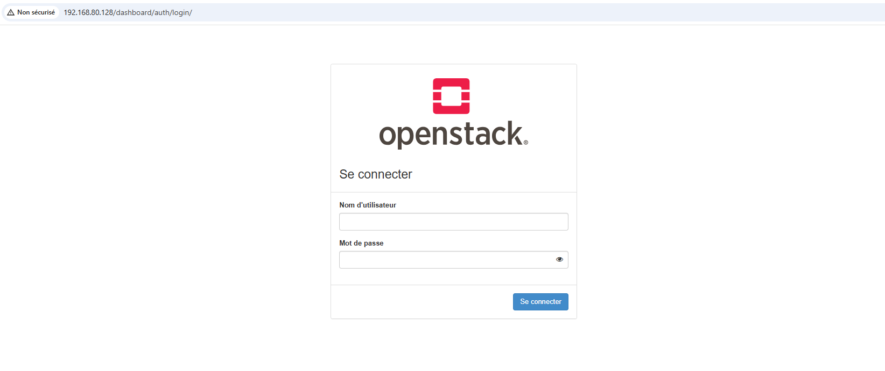
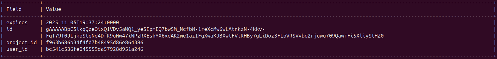
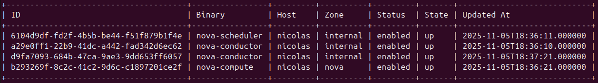
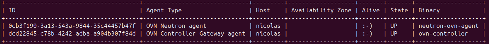
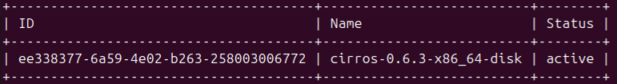
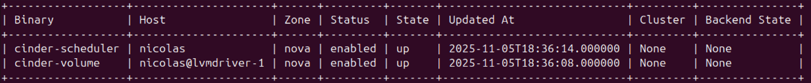
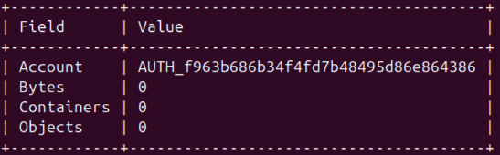
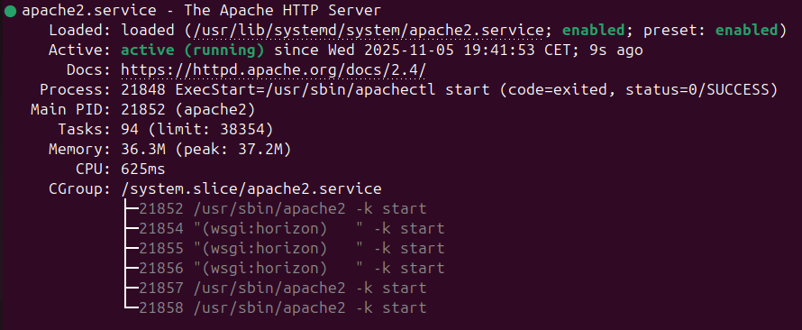

Guide complet pour déployer une infrastructure IaaS sur Ubuntu 24.04. Maîtrisez les services essentiels : Keystone, Nova, Neutron, Glance, Cinder et Swift.
Installer une plateforme OpenStack complète (IaaS) sur Ubuntu 24.04 via l'outil officiel DevStack.
Note de sécurité : OpenStack ne doit jamais être exécuté en root. Nous créons un utilisateur dédié stack.
# 1. Mise à jour du système sudo apt update && sudo apt upgrade -y # 2. Création de l'utilisateur stack sudo useradd -s /bin/bash -d /opt/stack -m stack # 3. Configuration des droits sudo sans mot de passe echo "stack ALL=(ALL) NOPASSWD: ALL" | sudo tee /etc/sudoers.d/stack # 4. Connexion à l'utilisateur stack sudo su - stack
A. Téléchargement
git clone https://opendev.org/openstack/devstack cd devstack
B. Configuration — local.conf
Création du fichier nano local.conf :
[[local|localrc]]
ADMIN_PASSWORD=secret
DATABASE_PASSWORD=$ADMIN_PASSWORD
RABBIT_PASSWORD=$ADMIN_PASSWORD
SERVICE_PASSWORD=$ADMIN_PASSWORD
# Activation de Swift (Object Storage)
enable_service s-account s-container s-object s-proxy
C. Lancement du déploiement
Durée estimée : 30 minutes à 1/2 heures.
./stack.sh
Accédez à l'interface web Horizon :
URL : http://IP_Vm/dashboard
Login : admin / Pass : secret

Chargement des variables d'environnement pour utiliser la CLI OpenStack :
source openrc admin admin/demo env | grep OS_
Tests des services & Résultats
Keystone (Identity)
openstack token issue

Nova (Compute)
openstack compute service list

Neutron (Network)
openstack network agent list

Glance (Image)
openstack image list

Cinder (Volume)
openstack volume service list

Swift (Object Store)
openstack object store account show

# Arrêter proprement ./unstack.sh # Reset total (Clean) ./clean.sh # Relancer ./stack.sh
Horizon utilise Apache2. En cas d'erreur 500 ou d'accès impossible :
sudo systemctl status apache2

local.conf../stack.sh.openstack token issue.